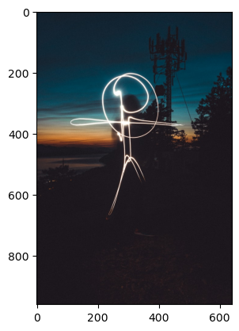

Blogs © 2024 by Kashish Mukheja is licensed under CC BY-NC 4.0
Experience my various ventures into my technical journey with an aim to articulate the intricacies…



 Analysis at LGA, JFK, and EWR Airports_files/figure-html/cell-11-output-1.png)